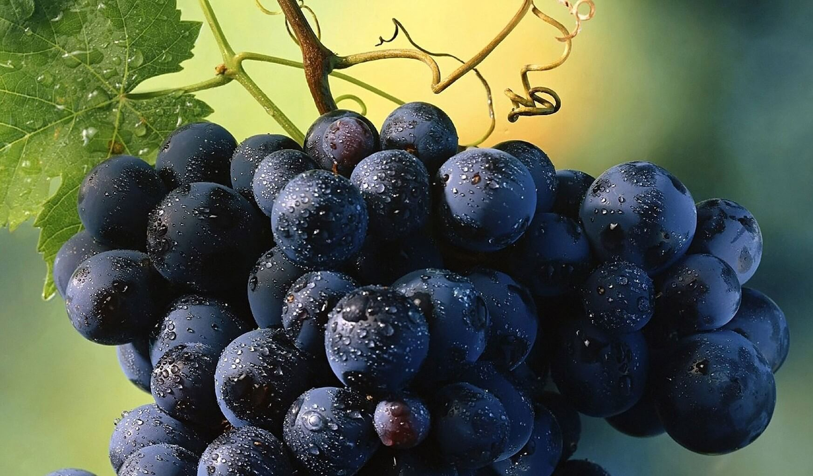

TALLERES Escuelas de Gastronomía, turismo, ingenierías, sommeliers. -Taller en salón con proyección sin coffee break (se cotiza por separado a petición del grupo). -Introducción a la Viticultura. -Introducción a la enología. -Viticultura extrema de Querétaro. -Recorrido guiado por viñedo y bodega. -Degustación guiada de vino y copa grabada de obsequio (incluye agua natural). · Opcional.- Alimentos y bebidas, se solicitan y cotizan por separado.
